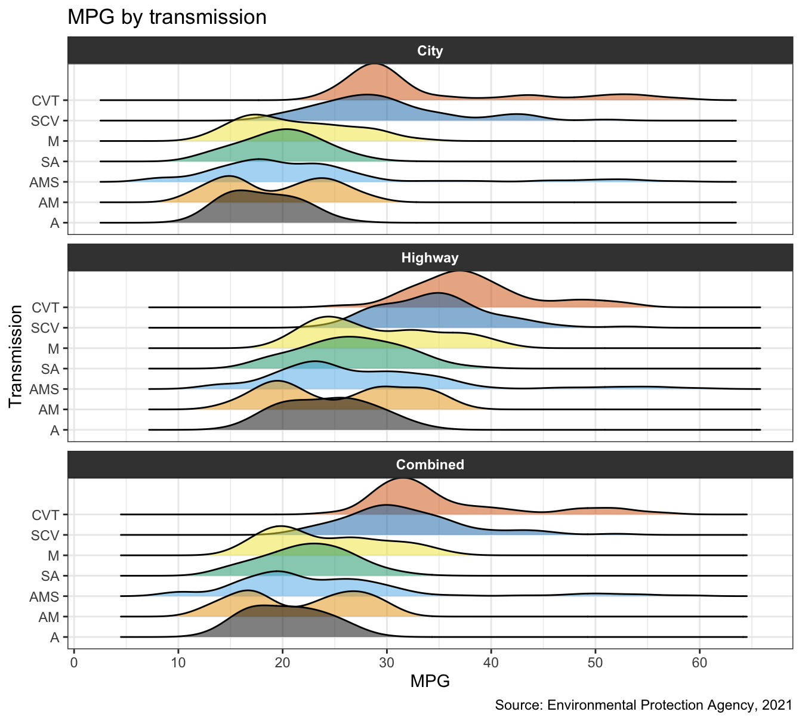
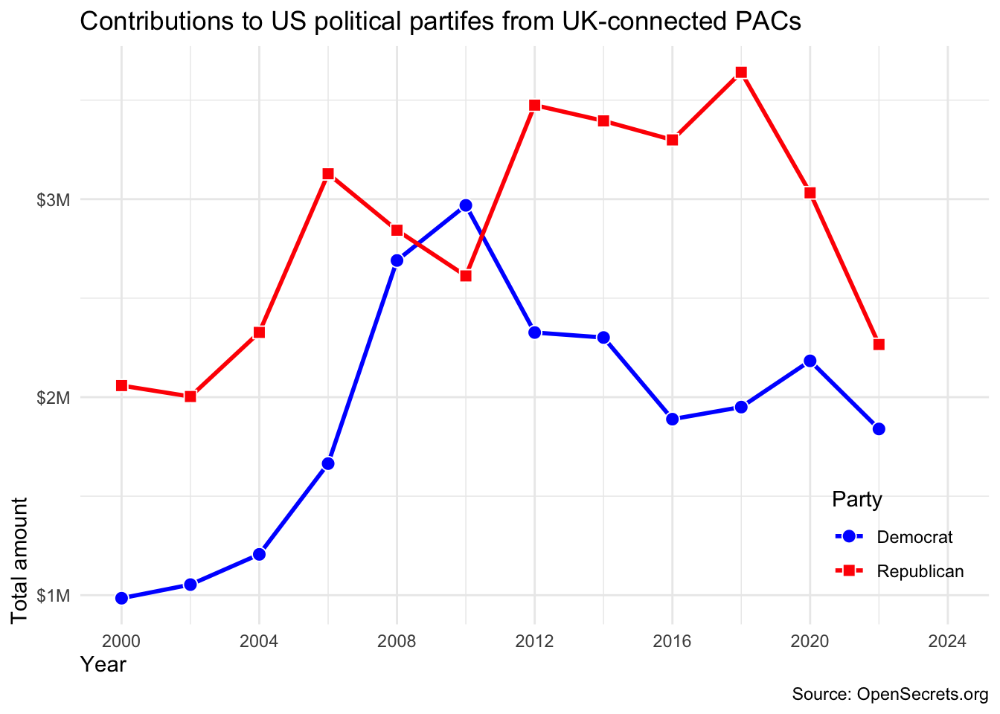
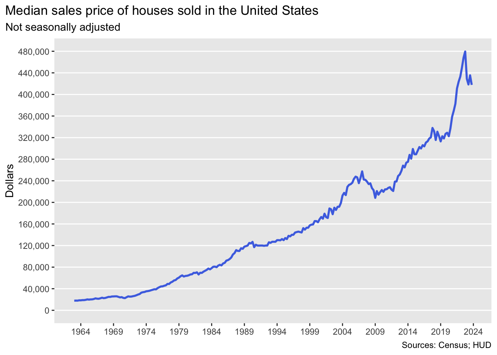
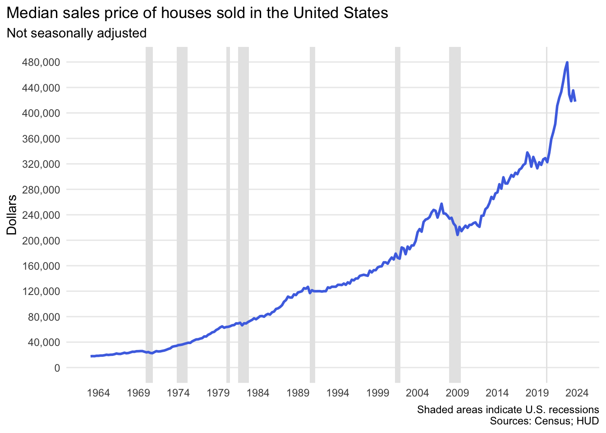
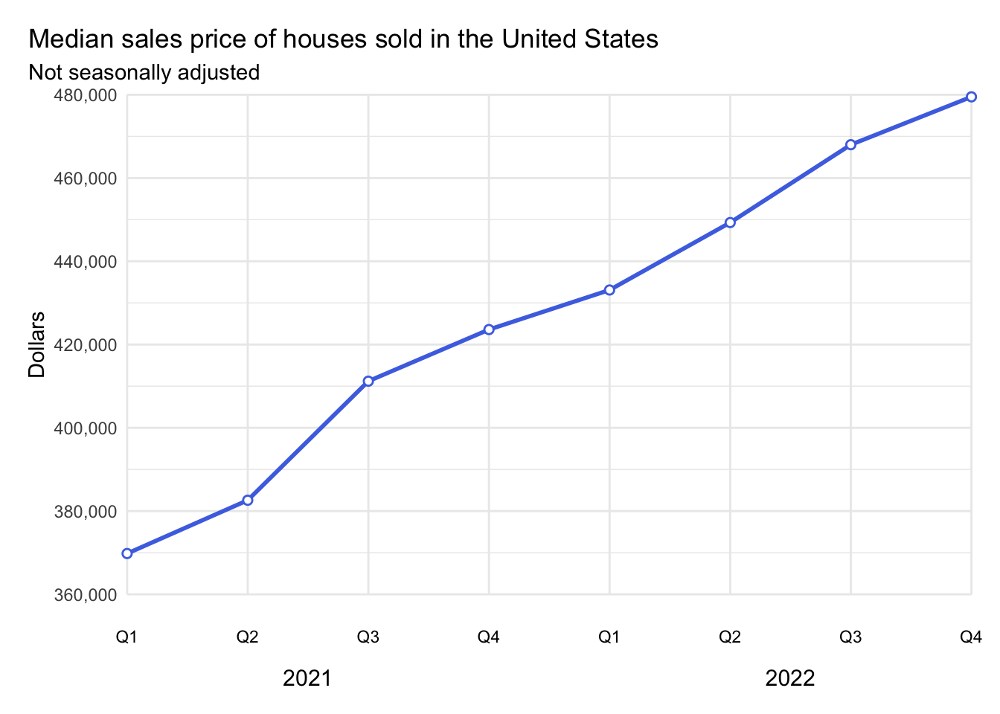

epa2021_longer <- epa2021 |>
pivot_longer(
cols = ___, # must use a selection helper: https://dplyr.tidyverse.org/reference/dplyr_tidy_select.html#overview-of-selection-features
names_to = "mpg_type",
values_to = "mpg_value",
names_pattern = "___"
) |>
mutate(
# reorder values of mpg_type to be in the order cty, hwy, comb
mpg_type = fct_relevel(___),
# recode levels of mpg_type to be City (instead of city), Highway (Hwy), Combined (comb)
mpg_type = fct_recode(___),
# reorder values of transmission based on median value of mpg_value
transmission = fct_reorder(___)
)HW 2
Across dimensions
For any exercise where you’re writing code, insert a code chunk and make sure to label the chunk. Use a short and informative label. For any exercise where you’re creating a plot, make sure to label all axes, legends, etc. and give it an informative title. For any exercise where you’re including a description and/or interpretation, use full sentences. Make a commit at least after finishing each exercise, or better yet, more frequently. Push your work regularly to GitHub. Once you’re done, inspect your GitHub repo to make sure you’ve pushed all of your changes.
Note
Your homework repositories are set up to run a GitHub action every time you push to the repository checking for (1) any files that shouldn’t be in your repository or that should be in a specific folder in your repository and (2) whether your Quarto document renders.

If either of these checks fail, you’ll see a red badge on your repository README and you’ll get an email saying “check assignment” action has failed.

If they pass, you’ll see a green badge on your repository README and you won’t get an email saying.
Up until the deadline, it doesn’t matter how many times these checks fail. Just make sure by the end the badge is green.
Question 1
A new day, a new plot, a new geom. The goal of this exercise is to learn about a new type of plot (ridgeline plot) and to learn how to make it. The data we will use for this exercise is epa2021 from the openintro package. Read the documentation to learn about the data.
Note
This is not a geom we introduced in class, so seeing an example of it in action will be helpful. Read the package README at https://wilkelab.org/ggridges and/or the introduction vignette at https://wilkelab.org/ggridges/articles/introduction.html. There is more information than you need for this question in the vignette; the first section on Geoms should be sufficient to help you get started.
a. Prep. First, you’re asked to prepare this data for plotting in a very specific way. Fill in the blanks below.
b. Visualize. Recreate the following visualization using the epa2021_longer data frame you created in part (a). Some notes:
This uses a colorblind-friendly color scale from ggthemes.
The theme is
theme_bw()but the background color of facet titles and the text color and font face for the them are modified. You don’t have to match the exact shade of gray, but your code should be modifying these elements to look similar to the desired output.

Question 2
Another look at MPGs.
a. Redo part (a) of Question 1 with an alternate pipeline. You should still use pivot_longer() but might use a different set of arguments. You will still likely do some additional data wrangling after pivoting, but can use a different set of argument and functions. Make sure your resulting data frame is the same as epa2021_longer you created above.
b. Redo part (b) of Question 1, sort of. Create any other plot to visualize the distribution of MPGs for the three types recorded (city, highway, and combined) across transmissions. Think about whether you want to use transmission or transmission_desc. Customize scales, geoms, etc. to your heart’s desire.
c. In a few sentences explain why you made the choices you made in part (b).
d. Interpret the visualization you created in part (b) in context of the data, i.e., what does it say about MPGs and transmission types?
Question 3
Foreign Connected PACs. Only American citizens (and immigrants with green cards) can contribute to federal politics, but the American divisions of foreign companies can form political action committees (PACs) and collect contributions from their American employees. (Source: https://www.opensecrets.org/political-action-committees-pacs/foreign-connected-pacs/2024).
In this exercise you will work with data from contributions to US political parties from foreign-connected PACs. The data is stored in CSV files in the data directory of your repository/project. There are 11 files, each for an election cycle between 2000 and 2024. You can load all of the data at once using the code below.
# get a list of files with "Foreign Connected PAC" in their names
list_of_files <- dir_ls(path = "data", regexp = "Foreign Connected PAC")
# read all files and row bind them
# keeping track of the file name in a new column called year
pac_raw <- read_csv(list_of_files, id = "year")The ultimate goal of this exercise is to recreate yet another plot. But there is a nontrivial amount of data wrangling and tidying that needs to happen before you can do that. Below are the steps you should follow so that you can obtain the necessary interim objects we will be looking for as we review your work.
a. First, clean the names of the variables in the dataset with a new function from the janitor package: clean_names(). Then clean and transform the data such that you have something like the following at the end. Save the resulting data frame with a the name pac (don’t overwrite pac_raw) and print the top 10 rows of the result.
# A tibble: 2,427 × 6
year pac_name_affiliate country_of_origin parent_company dems repubs
<dbl> <chr> <chr> <chr> <dbl> <dbl>
1 2000 7-Eleven Japan Ito-Yokado 1500 7000
2 2000 ABB Group Switzerland Asea Brown Boveri 17000 28500
3 2000 Accenture UK Accenture plc 23000 52984
4 2000 ACE INA UK ACE Group 12500 26000
5 2000 Acuson Corp (Siemens AG) Germany Siemens AG 2000 0
6 2000 Adtranz (DaimlerChrysler) Germany DaimlerChrysler AG 10000 500
7 2000 AE Staley Manufacturing (Tate & Lyle) UK Tate & Lyle 10000 14000
8 2000 AEGON USA (AEGON NV) Netherlands Aegon NV 10500 47750
9 2000 AIM Management Group UK AMVESCAP 10000 15000
10 2000 Air Liquide America France L'Air Liquide SA 0 0
# ℹ 2,417 more rows
# ℹ Use `print(n = ...)` to see more rowsb. Then, pivot the data longer such that instead of dems and repubs columns you have a column called party with levels Democrat and Republican and another column called amount that contains the amount of contribution. Save the resulting data frame with a new name (don’t overwrite pac) and print the top 10 rows of the result.
c. Then, For each election cycle (year) calculate the total amount of contributions to Democrat and Republican parties from PACs with country_of_origin UK. The resulting summary table should have two rows for each year of data, one for Democrat and one for Republican contributions. Save the resulting data frame with a new name (don’t overwrite the input data) and print the top 10 rows of the result.
d. Then, recreate the following visualization. Hint: The points are filled plotting characters with color = "white" overlaid on the lines.

e. Finally, remake the same visualization, but for a different country. I recommend you choose a country with a substantial number of contributions to US politics. Interpret the new visualization that you make. Depending on the trajectory of contributions from this country, you might need to move the legend out of the way.
Question 4
Median housing prices in the US. The inspiration and the data for this exercise comes from https://fred.stlouisfed.org/series/MSPUS. The two datasets you’ll use are median_housing and recessions, both of which are in the data folder of your repository.
a. Load the two datasets using read_csv().
b. Create the following visualization.

c. Identify recessions that happened during the time frame of the median_housing dataset. Do this by adding a new variable to recessions that takes the value TRUE if the recession happened during this time frame and FALSE if not.
d. Now recreate the following visualization. The shaded areas are recessions that happened during the time frame of the median_housing dataset. Hint: The shaded areas are “behind” the line.

e. Create a subset of the median_housing dataset for data from 2021 and 2022. Add two columns: year and quarter. year is the year of the date and quarter takes the values Q1, Q2, Q3, or Q4 based on date.
f. Create the following visualization.

Question 5
Thank you. Make a plot that says “Thank you” on it. Get creative! You can make it however you like, e.g., annotation, geoms, fake data, etc. There will be points assigned to creativity for this exercise. So just annotating the plot with the letters would earn fewer points than a more creative approach. Also, use as little as defaults as possible, in terms of color scales, themes, etc. The plots you make will be shared with our guest speakers as part of a “thank you” note. If you would like your name shown on the plots shared with them, you should add your name somewhere on the plot, e.g., the caption. If you don’t want your name shown, just leave it out and the plot will be shared anonymously. (There are no points attached to adding your name to them, you can choose to share with your name or anonymously.)